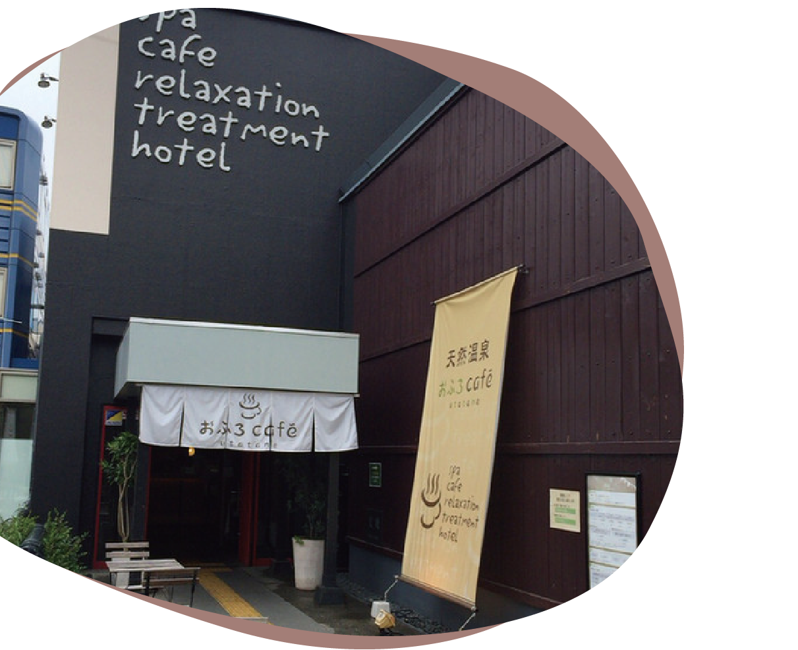

おふろcafe utatane
ABOUT

温泉にカフェなどさまざまな設備が完備されているところです。
入場料を支払わなければならないため、少し値段は高めです。
INFORMATION
カフェ営業時間 11:00～24:00
一度入場してしまえば自由なため、先にカフェに行っても良し、お風呂に入ってからカフェによっても良しです。
デスクワークに便利なWi-Fiとコンセントが完備されています。
別途料金はかかりますが、個室も用意されています。